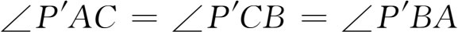
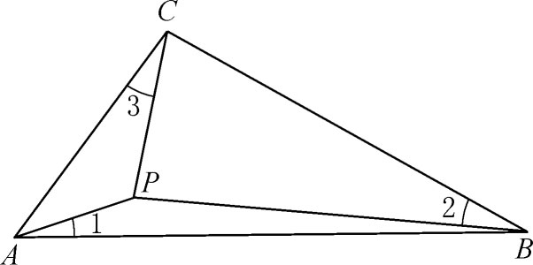
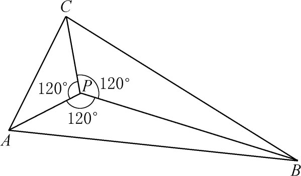
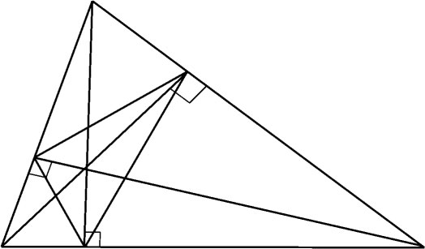
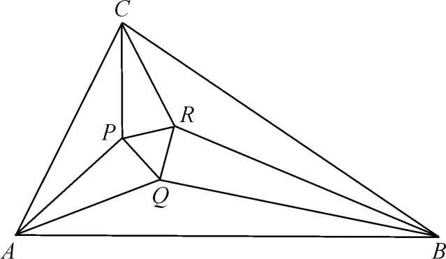

2．综合的欧几里得几何学
虽然蒙日所鼓动起来的几何学家们去研究射影几何学了，但我们先停下来看看综合的欧几里得几何学中的一些新成果。这些成果，或许重要性不大，然而显示出这门古老学科的新的主题和几乎无穷无尽的丰富多彩。实际上产生了数以百计的新定理，我们只能从中举几个例子。
每个三角形ABC有九个特别的点：各边的中点、三条高的垂足，以及各顶点与垂心连线的中点。这九个点全在一个圆周上，叫做九点圆。这定理是热尔岗（Joseph-Diez Gergonne）与彭赛列首先发表的(2)。它常被归功于费尔巴哈（Karl Wilhelm Feuerbach，1800—1834），一位高中教师，他的证明发表在《直边三角形的一些特殊点的性质》（Eigenschaften einiger merkwürdigen Punkte des geradlinigen Dreiecks，1822）里。在这本书里，费尔巴哈添加了关于九点圆的另一个事实。旁切圆是与一条边和另外二条边的延长线相切的圆。（旁切圆的圆心位于两个外角和较远的那个内角的分角线上。）费尔巴哈的定理说，九点圆与内切圆以及三个旁边圆都相切。
在1816年出版的一本小书《平面直边三角形的一些性质》（Über einige Eigenschaften des ebenen geradlinigen Dreiecks）中，克雷尔指出怎样在一个三角形内部求一点P，使得P与三角形的顶点的连线和三角形的边作成相等的角。就是说，在图35.1中∠1＝∠2＝∠3。还有另一点P′，使得

。
图35.1
我们知道，圆锥曲线曾被阿波罗尼斯（Apollonius）看作是圆锥的截口而明确地讨论过，后来在17世纪又被作为平面上的轨迹引进过。1822年丹德林（Germinal Dandelin，1794—1847）证明了关于圆锥曲线与圆锥的关系的一个十分有趣的定理(3)。他的定理说，如果两个球面内切于一个圆锥并且都与一个已知平面相切，该平面与圆锥交于一条圆锥曲线，那么球面与平面的接触点是圆锥曲线的焦点，球面与圆锥相切的圆所在的平面同已知平面的交线是圆锥曲线的准线。
19世纪时人们探讨的另一个有趣的主题是用纯几何的方法，也就是不依靠变分法，求解极大极小问题。在施泰纳用综合方法证明的几个定理中，最著名的结果是等周定理：在具有一定周长的所有平面图形中，圆周包围着最大的面积。施泰纳给出了各种各样的证明(4)。可惜施泰纳假定了存在着一条曲线它确实包围着最大的面积。狄利克雷好几次试图说服他，说因此他的证明是不完全的；但是施泰纳坚持说这是不证自明的。然而有一次他的确写过（在1842年文章的第一篇中）(5)：“而如果假定有一个最大的图形，证明就是轻而易举的。”
极大化曲线的存在性证明难住了数学家们好些年，直到魏尔斯特拉斯（Karl Weierstrass）在他1870年代的讲演中求助于变分法(6)解决了这个问题为止。其后卡拉泰奥多里（Constantin Caratheodory，1873—1950）和施图迪(7)在一篇合写的文章中不用变分法而严格化了施泰纳的证明。他们的证明（有两个）是直接的，不像施泰纳的方法是间接的。在偏微分方程和分析学中做过伟大的工作并曾在包括格丁根和柏林在内的几所大学当过教授的施瓦茨（Hermann Amandus Schwarz），对三维的等周问题给了一个严格的证明(8)。
施泰纳也证明了（在1842年文章的第一篇中）在具有一定周长的所有三角形中，等边三角形具有最大的面积。他的另一个结果(9)说，如果A，B，C是给定的三点（图35.2）并且三角形ABC的每个角都小于120°，那么使PA＋PB＋PC最小的点P正好使P处的每个角都是120°。但是如果三角形的一个角，比方说角A，等于或大于120°，那么P与A重合。这个结果很早以前卡瓦列里（Bonvaventura Cavalieri）［《六道几何练习题》（Exercitationes Geometricae Sex），1647］就证明过，但施泰纳一定不知道。施泰纳也把这结果推广到n个点。

图35.2
施瓦茨解决了下面的问题：已知一个锐角三角形，考虑所有这样的三角形，其每个顶点都在原来那个三角形的三条边上；问题是要找出周长最短的三角形。施瓦茨综合地证明了(10)这个周长最短的三角形的三顶点就是已知三角形的三个高的垂足（图35.3）(11)。

图35.3
欧几里得几何学的一条新奇的定理，在1899年被约翰斯·霍普金斯大学数学教授莫利（Frank Morley）所发现，后来许多人发表了它的证明(12)。这定理说，如果画出一个三角形的每个顶角的三等分线，则相邻的三等分线就相交于一个等边三角形的顶点（图35.4）。新奇处在于涉及角三等分线。直到19世纪中叶，没有一个数学家会去考虑这些线，因为只有可以作图的那些元素和图形才被认为在欧几里得几何学中是合法的。可作图性保证了存在性。然而，关于确立存在性的观念改变了，这一点当我们考察关于欧几里得几何学的逻辑基础的研究工作时将看得更清楚。

图35.4
沿着莫尔（George Mohr）和马斯凯罗尼（Lorenzo Mascheroni）（第12章第2节）所开创的路线，为减少直尺和圆规的使用作了若干努力。彭赛列在他1822年的《论著》（Traité）中证明了能用直尺和圆规作的所有的作图（除了作圆弧以外）都能只用直尺做到，只需事先给我们一个固定的圆及其圆心。施泰纳在一本小书《用直尺和一个定圆进行的几何作图》（Die geometrischen Constructionen ausgeführt mittelst der geraden Linie und eines festen Kreises）(13)中更优美地重新证明了这个结果。虽然施泰纳这本书是为教育的目的写的，但他在序言里宣称他将证明一位法国数学家表达过的一个猜想。
关于用综合方法证明的欧几里得几何学定理的上述简短选讲，不应给读者留下解析几何的方法没有人用的印象。事实上，热尔岗给出了许多几何定理的解析证明，发表在他创办的杂志《数学纪事》（Annales de Mathématiques）上。